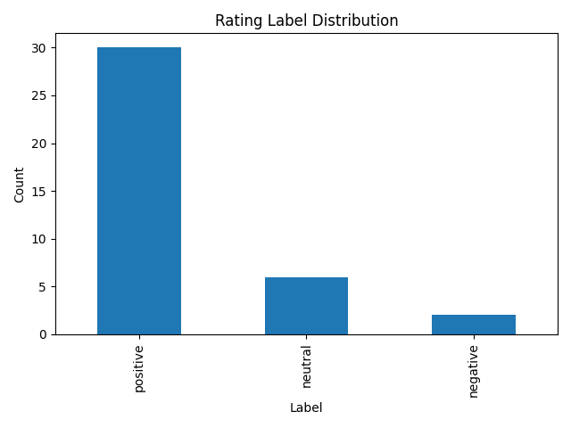
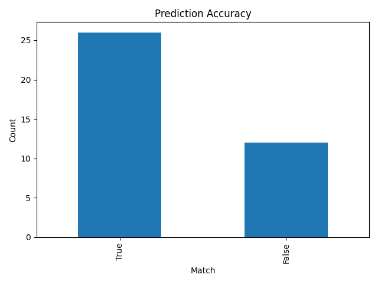

❗
Problem
Customer ratings are often unreliable and do not always match the actual review text.
This project simulates a real-world AI Data Trainer workflow for sentiment analysis. It focuses on the entire data lifecycle: preprocessing, weak labeling, AI prediction, conflict detection, evaluation, language detection, human review, and final approved dataset creation.
Raw Reviews
↓
Clean & Prepare Text
↓
Weak Label from rating
↓
AI Prediction from text
↓
Conflict Detection
↓
Evaluation & Analysis
↓
Language Detection
↓
Human Review HITL
↓
Final Approved LabelsCustomer ratings are often unreliable and do not always match the actual review text.
Use weak labeling from ratings, AI-based sentiment prediction, and human-in-the-loop validation.
A high-quality, reliable labeled dataset suitable for real-world AI systems.
This project uses a small dataset for demonstration purposes. The goal is to simulate a real-world AI data labeling pipeline, not to achieve production-level model performance. Results should be interpreted as workflow validation, not final model accuracy.
Core Pipeline
Data preprocessing and cleaning.
Rating-based reference labels.
TextBlob, VADER, and contrast-aware logic.
HITL validation for difficult cases.
This project does not treat ratings as perfect ground truth. In real-world customer review data, star ratings can be noisy. A high rating can include a complaint, and a low rating may reflect delivery instead of product sentiment.
| Rating | Review Text | Why It Is Noisy |
|---|---|---|
| ⭐⭐⭐⭐⭐ | Good product, but it broke after one week. | Rating is positive, but text has a negative issue. |
| ⭐ | The product is fine, but delivery was terrible. | Rating may reflect delivery, not product sentiment. |
| ⭐⭐⭐ | Works perfectly for my needs. | Rating is neutral, but text sounds positive. |
4-5 stars → positive
3 stars → neutral
1-2 stars → negative
Stored as: weak_rating_labelThe project uses a hybrid sentiment analysis approach instead of depending on one tool.
but, however, and althoughExample
Nice design, but it stopped working after two days.
The system gives more importance to the text after but, because that part usually contains the stronger final opinion.
After creating the weak rating label and the AI prediction, the system compares them.
weak_rating_label vs predicted_label
rating_prediction_conflict = TrueThe rating signal and the review text signal disagree, so the row should be reviewed carefully.
Some reviews do not contain enough clear information for confident prediction. The system marks these as uncertain and stores them in data/uncertain_reviews.csv.
Rows are sent to human review when rating and prediction conflict, prediction confidence is low, prediction is uncertain, or text is unclear or hard to judge. The human reviewer can add a human_label.
Priority 1
Priority 2
Priority 3
If human_label exists:
final_label = human_label
Else:
final_label = predicted_labelEvaluation
The dataset is skewed toward positive reviews, which can impact precision, recall, and F1 score for neutral and negative classes.
The system uses langdetect to identify each review as English, non-English, or unknown.
english
non_english
unknownVisual Outputs
Shows how many reviews fall into each sentiment category based on rating labels.

Measures agreement with weak rating labels, not true model accuracy.

| Clean Text | Weak Label | Predicted Label | Match |
|---|---|---|---|
| excelentes a mi esposo le encantan | positive | neutral | ❌ |
| best action adventure capturing device | positive | positive | ✅ |
| great everything thing was great for this order | positive | positive | ✅ |
| todo funciona bien y cumple con lo esperado | positive | neutral | ❌ |
| excelente accesorio excelente accesorio | positive | neutral | ❌ |
These mismatches indicate disagreement between rating-based labels and text-based predictions, and are sent for human review.
| Clean Text | Weak Label | Predicted | Match |
|---|---|---|---|
| excelentes a mi esposo le encantan | positive | neutral | ❌ |
| todo funciona bien y cumple con lo esperado | positive | neutral | ❌ |
| excelente accesorio excelente accesorio | positive | neutral | ❌ |
weak_rating_label ≠ predicted_label| Tool | Purpose |
|---|---|
| Python | Core programming |
| Pandas | Data processing |
| TextBlob | Sentiment polarity |
| VADER | Rule-based sentiment |
| LangDetect | Language detection |
| Scikit-learn | Evaluation metrics |
| Matplotlib | Visualization |
ai-data-trainer-pipeline/
│
├── data/
├── docs/
│ └── annotation_guidelines.md
├── src/
├── assets/
├── requirements.txt
└── README.mdpip install -r requirements.txtpython run_pipeline.pyfinal_reviews.csv
uncertain_reviews.csv
rating_prediction_conflicts.csv
mistake_analysis_report.csv
evaluation_metrics.csv
confusion_matrix.csv
classification_report.csv
human_review_queue.csv
final_approved_reviews.csv
A realistic AI data pipeline that handles noisy labels, uses hybrid sentiment modeling, detects conflicts and uncertainty, integrates human validation, and produces a high-quality final dataset.
This pipeline focuses on data quality and labeling reliability, which are critical for building robust real-world AI systems.